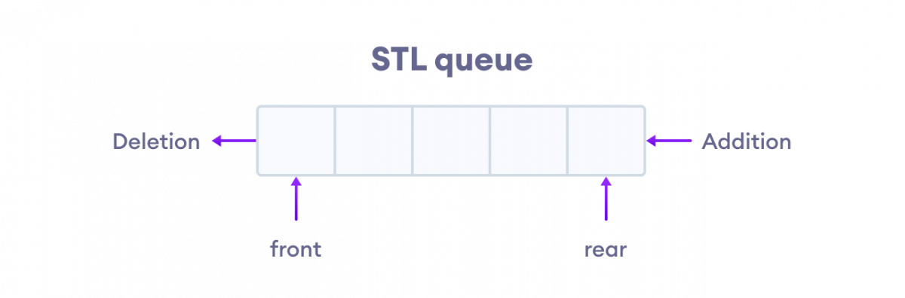

Cuprins

O structură de date în coadă este un concept fundamental în informatică utilizat pentru stocarea și gestionarea datelor într-o anumită ordine. Urmează principiul „First in, First out” (FIFO), în care primul element adăugat în coadă este primul care trebuie eliminat. Cozile sunt utilizate în mod obișnuit în diverși algoritmi și aplicații pentru simplitatea și eficiența lor în gestionarea fluxului de date.
Operațiile cu coada sunt similare cu modul în care funcționează coada la casa de bilete a unui cinematograf. Spectatorii vin și se așează în ordine la coadă, ordinea în care cumpără biletele este aceea în care au sosit. Deoarece operațiile de eliminare se fac în aceeași ordine ca cele de adăugare, coada este o structură de date de tip FIFO - First In First Out.
Pentru declararea unei cozi trebuie inclusă biblioteca <queue>, unde se află funcții de manipulare a acestui container, sau se poate implementa static ori dinamic, folosind liste din STL.
Vom folosi coada atunci când trebuie să prelucrăm informații într-o ordine precisă, pe măsură ce acestea sunt identificate. Uneori, informațiile noi sunt determinate pe baza celor vechi, deja existente în coadă. Mecanismul se numește expansiune a cozii și constă în următoarele:
La fel ca stivă, și coada poate fi implementată în limbajul C++ în mai multe moduri:
<queue> din STL.
Acest articol prezintă implementarea statică și folosirea STL.
Vom folosi un tablou unidimensional alocat static Q și două variabile simple prin care identificăm începutul (st) și sfârșitul cozii (dr). Numele variabilelor provine de la stânga și dreapta, deoarece adăugarea unui element în coadă se face adăugând un element în tabloul suport Q incrementând variabila dr, iar eliminarea se face mărind variabila st - ignorând elementele din față, fără a le șterge efectiv.
În continuare considerăm o coadă cu elemente întregi.
🟩 Declarații
const int DIM = 1000;
int Q[DIM], st, dr;
🟩 Inițializarea cozii - crearea unei cozi vide cu ajutorul indicilor st și dr
st = 1 , dr = 0;
🟩 Verificare dacă este vidă coada
st > dr // vidă
st <= dr // nevidă
🟩 Adăugarea unui element
Q[++dr] = _VALOARE;
🟩 Eliminarea unui element
st ++;
🟩 Identificarea valorii de la începutul cozii
Q[st]
Standard Template Library pune la dispoziție un container adaptor specializat pentru gestionarea unei cozi, numit queue. Un obiect de tip queue încapsulează toate operațiile specifice cozii:
🟩 Inițializarea cozii - crearea unei cozi vide
std::queue<int> Q;
🟩 Verificare dacă este vidă coada
Q.empty() // true dacă este vidă, false în caz contrar
🟩 Adăugarea unui element
Q.push( _VALOARE );
🟩 Eliminarea unui element
Q.pop();
🟩 Identificarea valorii de la începutul cozii
Q.front()
Funcția |
Descriere |
|---|---|
| empty() | Returnează true dacă queue-ul e gol, altfel returnează false |
| size() | Returnează dimensiunea queue-ului |
| swap() | Interschimbă continutul a două queue-uri dacă acestea sunt de același tip de date, deși lungimea diferă |
| emplace() | Inserează un nou element în containerul queue-ului, noul element este adăugat la finalul queue-ului |
| front() | Returneaza un punct de referință la primul al queue-ului |
| back() | Returneaza un punct de referință la ultimul al queue-ului |
| push(g) | Adaugă elementul ”g” la finalul queue-ului |
| pop() | Șterge primul element al queue-ului |